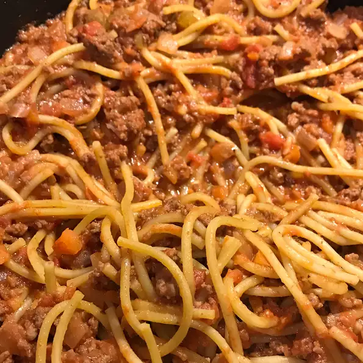

Bolognese

A meat sauce based spaghetti recipe.
A simple meat based sauce that can have spice added to it if desired, goes incredibly well with any kind of pasta, but classicly is done with spaghetti.
Ingredients
- Tomato sauce
- Lean Ground Beef
- Garlic
- Salt & Pepper
- Olive Oil
- Spaghetti or any other pasta
- Hot Sauce(optional)
- Fine slice the garlic, and toss it in a pan with olive oil already hot.
- Throw the beef on, and spread it over the pan. allow it to cook for around a minute
- Add herbs, parsley, oregano, etc, to whatever your liking.
- As the meat browns, add tomato sauce and stir.
- Add whatever is preferred for taste(I use worcestershire)
- let simmer for one hour(preferably covered)
- boil water in a pot, add pasta when boiling
- throw pasta into the pot, once cooked, kill heat on sauce and water
- strain pasta and mix the sauce into portions.
- add parmesan cheese and serve